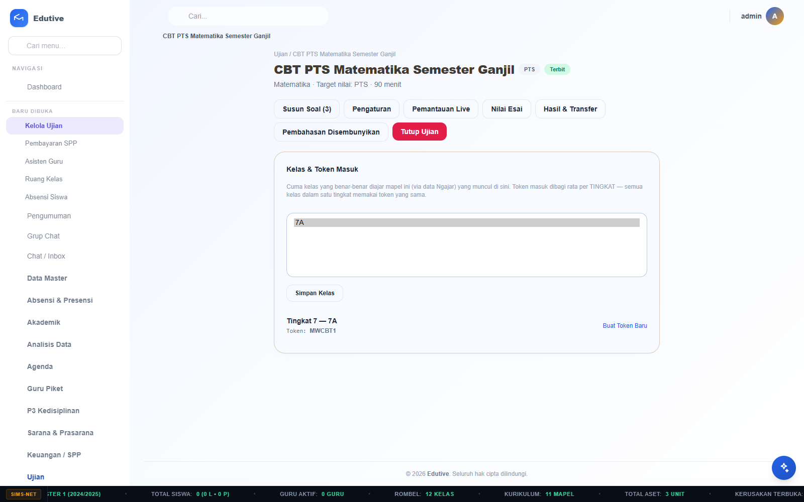
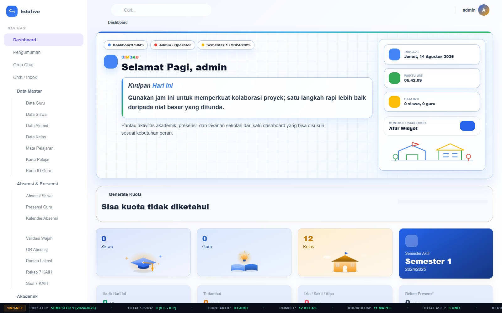
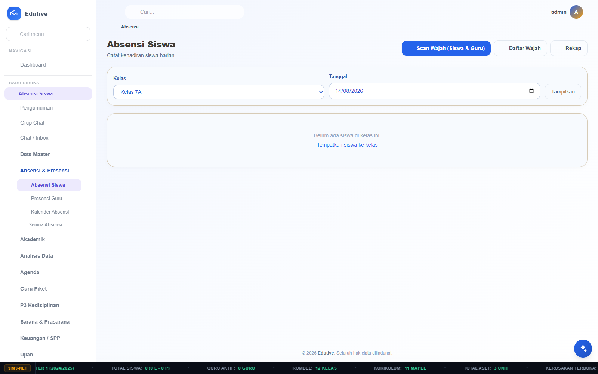
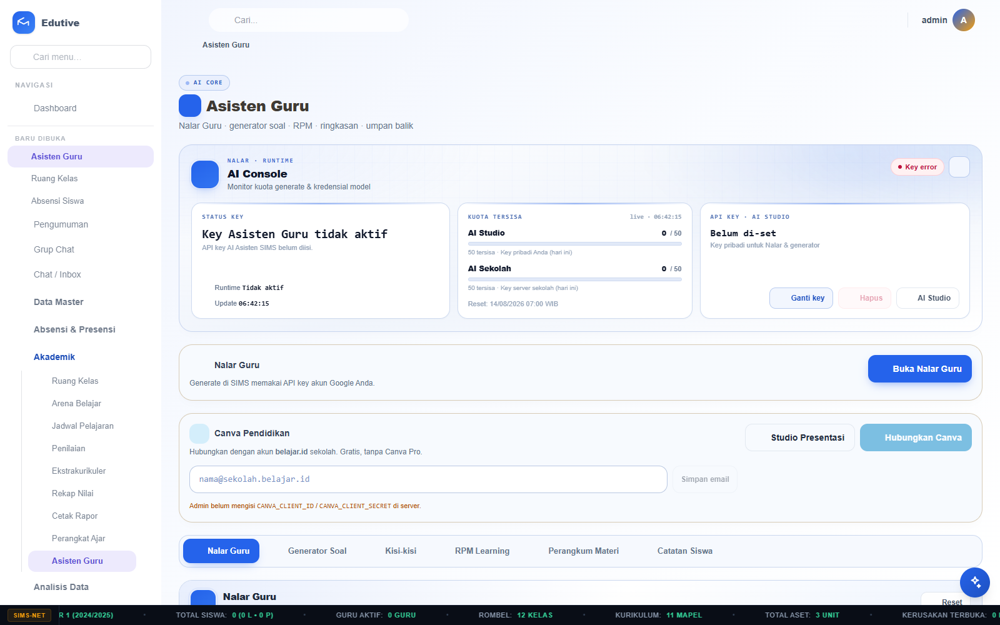
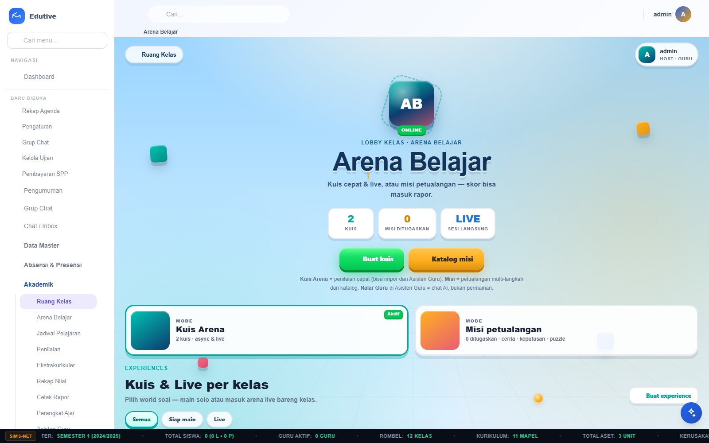
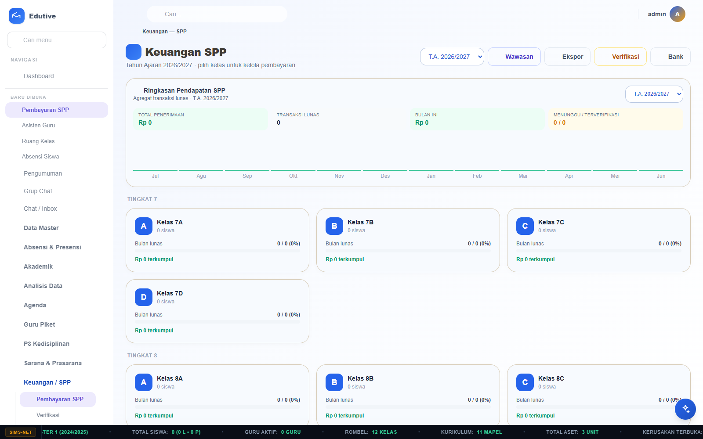
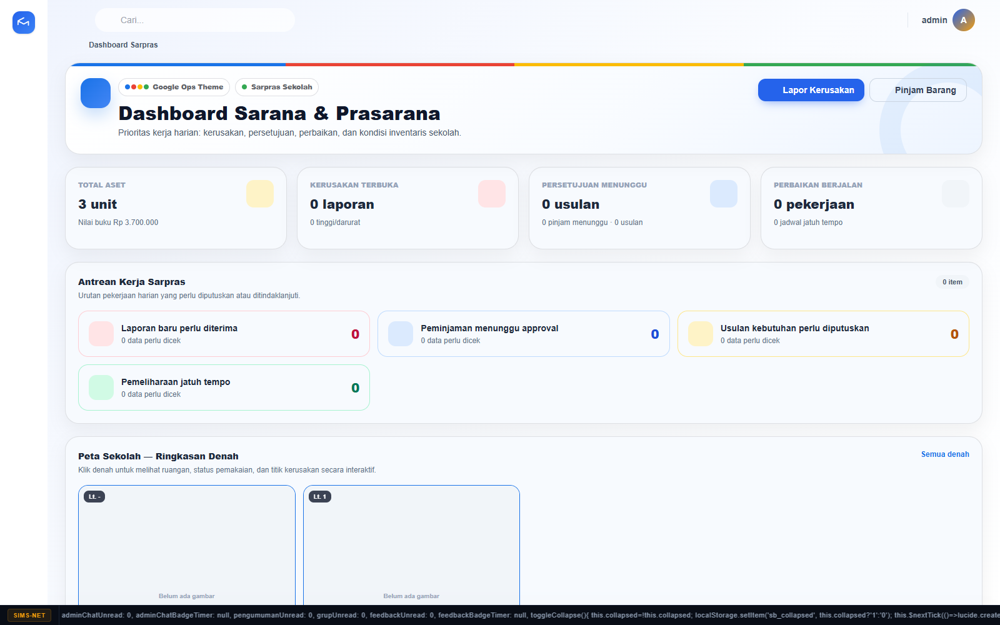

CBT & Ujian Online
Ujian web terhubung ke buku nilai
Bank soal, token, auto-grading, nilai esai, pemantauan, dan transfer otomatis ke Sumatif, PTS, atau PAS.
SIMS menyatukan operasional sekolah, pembelajaran, komunikasi, keuangan, dan sarana prasarana dalam satu pengalaman yang mudah dipakai setiap hari.
Dibangun untuk alur kerja sekolah Indonesia — dengan akses sesuai peran.

Bukan sekadar daftar menu. SIMS menghubungkan pekerjaan harian setiap peran agar informasi tidak berhenti di satu bagian.

Bank soal, token, auto-grading, nilai esai, pemantauan, dan transfer otomatis ke Sumatif, PTS, atau PAS.

Wajah, QR bergeolokasi, kiosk, presensi guru, rekap, dan notifikasi kehadiran ke orang tua.

Generate soal, RPM, rangkuman, catatan siswa, feedback, ekspor, dan riwayat kerja.

Kuis, misi, live session, leaderboard, mode tim, template interaktif, dan analitik.

Tagihan, bukti bayar, verifikasi, rekening koran, rekonsiliasi, antrian, dan notifikasi.

Inventaris, ruangan, peminjaman, kerusakan, perbaikan, pengadaan, mutasi, dan laporan.
Guru menyiapkan ujian formal, siswa mengerjakan melalui browser, sistem mengoreksi soal objektif, lalu nilai yang sudah final ditransfer otomatis ke komponen akademik yang dipilih.
Alur kehadiran tidak berhenti di mesin absensi. Data masuk ke rekap sekolah dan diteruskan ke akun orang tua yang terhubung.
Scan wajah mencatat kedatangan dari profil wajah siswa yang sudah terdaftar.
Sekolah menentukan titik dan radius. Sistem memeriksa posisi, menyimpan akurasi, serta jarak saat absensi.
Kehadiran tersimpan di akun orang tua dan dapat dikirim melalui push notification. Pengulangan dijaga agar tidak menimbulkan spam.
Jadwal dan agenda digital bekerja sebagai satu siklus, sehingga guru lebih mudah menjaga catatan pembelajaran tetap lengkap.
Role access membantu informasi sampai kepada orang yang tepat, tanpa membuat semua pengguna melihat menu yang sama.
Menyiapkan data, pengaturan, akses, dan operasional sekolah.
Mengajar, menerima alert jadwal, mengisi agenda, dan menilai.
Belajar, mengerjakan tugas, mengikuti kuis, dan melihat nilai.
Memantau kehadiran, pengumuman, perkembangan, dan tagihan anak.
Melihat ringkasan, rekap agenda, narasi data, dan kondisi sekolah.
Dalam satu demo, sekolah dapat melihat guru membuat soal, siswa mengerjakan, hasil dihitung, lalu kepala sekolah dan orang tua melihat perkembangan.
Mulai dari demo yang sesuai peran dan kebutuhan sekolah. Kami bantu memetakan modul yang paling relevan.
Minta Demo SIMS →